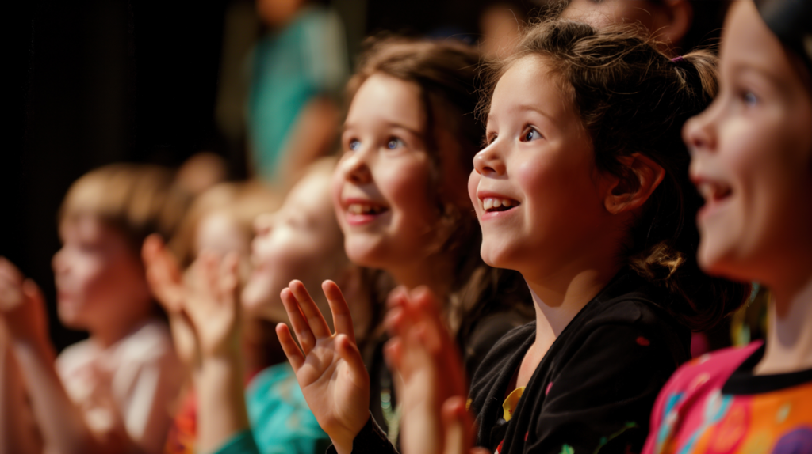

100% Volunteer Organization
Completely volunteer run so support can focus on children.
Feeding children in Charlotte County when school meals aren't available — because no child should go hungry on the weekend.

Completely volunteer run so support can focus on children.
Food bags are packed and distributed throughout the school year.
Serving children and families across Charlotte County, Florida.
Back Pack Kidz helps make sure children have food when school meals are not available. It is a practical, local response powered by volunteers, schools, and neighbors who believe every child deserves to return to class nourished and ready.
Every packed bag is a quiet message to a child: your community sees you, cares about you, and wants you to thrive.
Our dedicated volunteers work every week to ensure children have nutritious food when they need it most - over the weekend.
Each week, dedicated volunteers gather to pack bags filled with nutritious food for children who need weekend support.
Bags are delivered weekly to local elementary schools and distributed by volunteers and school staff to children who need them most.
Middle and high school pantries provide older students with nutritious food and basic hygiene products.
The work is direct, repeatable, and local. Support becomes food, food becomes packed bags, and packed bags become a steadier weekend for children who need them.
Donations and support help provide the food children need.
Volunteers gather weekly to prepare nutritious weekend bags.
Food is shared through schools in a way that protects privacy.
Weekend support helps children come back nourished and focused.
Weekend hunger can be invisible. Back Pack Kidz works with schools and volunteers to make food support feel steady, respectful, and close to home.
Donate Now
Weekend hunger affects more than a meal. It shapes how children learn, focus, and feel supported by their community.
children live in food insecure households
Most food-insecure households with children have at least one working adult, often in low-wage jobs
Hunger is linked to lower academic achievement and concentration
Ending childhood hunger improves community health, school outcomes, and economic productivity
Back Pack Kidz helps bridge the gap between school meals and the weekend so children can return ready to learn.
Weekend meal bags help children return to school nourished and ready to thrive.
Back Pack Kidz collaborates with schools to distribute food in a way that protects dignity and privacy.
Addressing weekend hunger helps children focus on education and break the cycle of food insecurity.
Back Pack Kidz depends on people and local organizations who care about children beyond the school week. This section is ready for named partners when those details are available.
View Our PartnersTrusted distribution relationships help protect dignity and privacy.
Weekly hands make the work consistent and personal.
Local generosity helps keep weekend food support moving.
The number of children in need has greatly increased, and the cost of food continues to rise. Your support helps us continue providing essential nutrition to vulnerable children.
Zero administrative costs - completely volunteer run!
Clear answers help people take the next step with confidence.
100% of your donation goes directly to helping hungry children.
Back Pack Kidz collaborates with schools to distribute food in a way that protects dignity and privacy.
You can volunteer, sponsor a child, partner with the program, or contact Back Pack Kidz to learn where support is needed most.